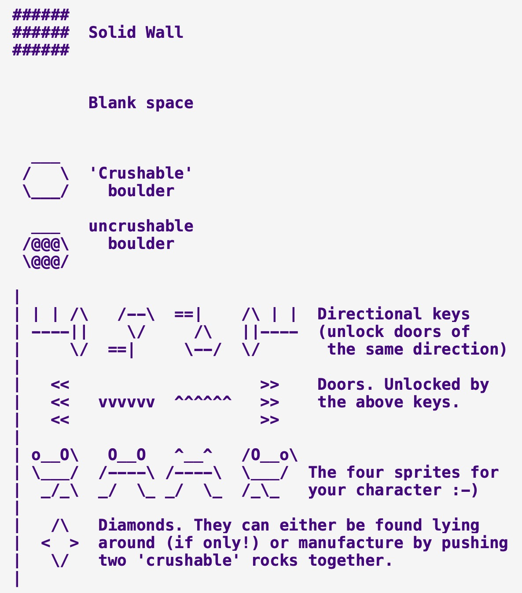

Author:
- Name: James Bonfield
Location: GB - United Kingdom of Great Britain and Northern Ireland (United Kingdom)
To build:
make allThere are two alternate versions which allow one to not be restricted in movements or to change the maximum number of movements, even if that’s fewer than the original program.
To use:
./rinceAlternate code:
The first alternate version, rince.alt.c, disables a maximum move count so that anyone with enough patience and time can complete the puzzle, without having to worry about how many moves they make, assuming they don’t get stuck. The second version, rince.alt2.c, allows one to reconfigure at compilation the maximum number of moves, even if that is lowering the count.
The author set the maximum number of moves to 484.
Alternate build:
make altThis will build both alt versions where the first one, rince.alt, has no
restrictions in the number of movements and the second one, rince.alt2, has a
configurable maximum number of moves allowed, defaulting to the entry’s max,
484.
To reconfigure the maximum number of moves to 700:
make clobber MAXMOVES=700 altAlternate use:
To run the first alt version:
./rince.altTo run the second alt version:
./rince.alt2Can you figure out how to make the two alternate versions equivalent in functionality without modifying the code? That is can you make the second alt version end up allowing any number of movements?
Judges’ remarks:
In 2023 this entry was updated to allow most ANSI C compilers to compile the code and to fix a bug where the win or lose message was not seen.
Author’s remarks:
This program is a simple puzzle type game. (I’ll leave you to play it to see the rest of it .. :-) .) The general idea was to try and write the smallest playable game, but keep the playability and enjoyment high.
Instructions:
Key to map:

The general idea of the game is to collect all the diamonds. This must
be done in the minimum amount of moves. I’ve allowed a margin of 5
moves which brings the moves allowed to 484 (alter the value of u in
the program to set the max moves allowed).
There are two types of boulders. Both can be pushed around, but only the hollow (crushable) ones can be turned into diamonds (by pushing it onto another hollow one).
Of the four types of doors (and keys) only 3 have been defined. This was done to keep the source as low as possible (as I only used 3 in the map). To unlock a door simply push a key into the corresponding door. Take care that it’s facing in the correct direction.
Inventory for 1991/rince
Primary files
- rince.c - entry source code
- Makefile - entry Makefile
- rince.alt2.c - second alternate source code
- rince.alt.c - alternate source code
- rince.orig.c - original source code
- map-key.jpg - key to map image
Secondary files
- 1991_rince.tar.bz2 - download entry tarball
- README.md - markdown source for this web page
- .entry.json - entry summary and manifest in JSON
- .gitignore - list of files that should not be committed under git
- .path - directory path from top level directory
- index.html - this web page


{kind=link}